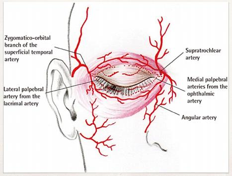

Part I · Vascular system
Arterial supply of the eyelid
- The eyelid has a rich arterial supply, coming from:
- Medial palpebral branch of the ophthalmic artery.
- Lateral palpebral branch of the lacrimal artery.
- These vessels pass anterior to the tarsus and divide into:
- Marginal arcade — near the lid margin.
- Peripheral arcade — near the upper border of the tarsus in the upper lid. In the lower lid there is only one arch near the free edge.
Venous drainage Pretarsal plexus drains to the temporal and facial veins; post-tarsal plexus drains to the ophthalmic veins.
